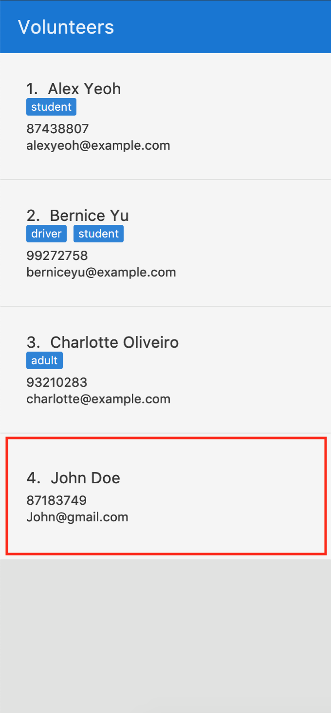
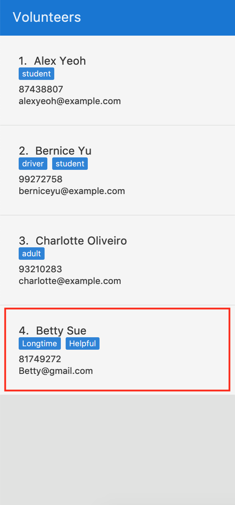
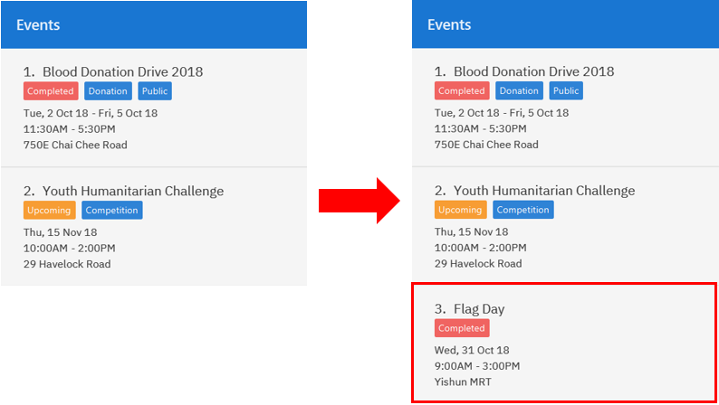
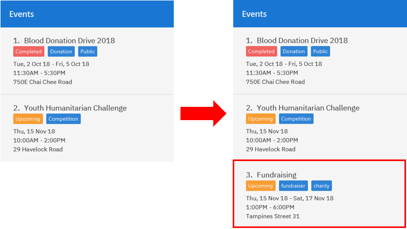
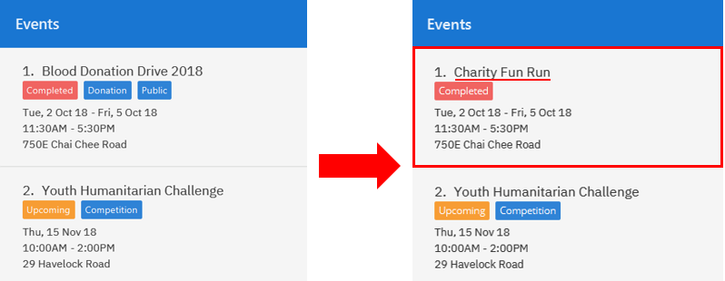
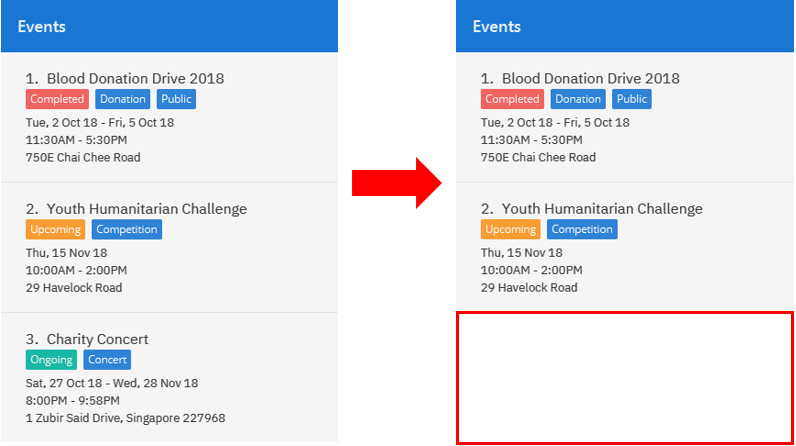

By: Team W16-2 Since: Sept 2018 Licence: MIT
1. Introduction
Non-profit organizations rely on volunteer work to maintain parts of their operations. A volunteer management system is essential in helping to retain volunteers by ensuring that there is a large enough pool of volunteers who are motivated to support the various events. Therefore, it is critical that a organization is able to source the right person for the right activity.
SocialCare is an application that is designed to help your organization manage your volunteers effectively. You will be able to:
-
Manage volunteer information such as contact details.
-
Manage events for your organization.
-
Create volunteering records for your volunteers.
Interested? Jump to Section 2, “Quick Start” to get started.
Enjoy!
2. Quick Start
This section contains information on how you can run SocialCare on your desktop.
To begin, follow the steps below:
-
Check that you have Java version
9or later installed in your Computer. -
Download the latest
socialcare.jarhere. -
Copy the file to the folder you want to use as the home folder for SocialCare.
-
Double-click the file to start the app. The Graphical User Interface (GUI) should appear in a few seconds.
The figure above shows the typical arrangement of the parts of the application. It is currently showing the screen that users will see upon startup.
-
Toolbar: Provides quick access to exit the application or to open the user guide.
-
Panel: Displays volunteers or events, depending on which item you are managing.
-
Display Box: Shows more information for the selected item from the panel.
-
Command Box: Allows you to input commands for execution.
-
Command Result Box: Displays status of executed commands.
-
Status Bar: Provides further information of application.
To ensure that everything is running, you can try entering commands into the command box and press Enter to execute them.
e.g. typing help and pressing Enter will open the help window.
SocialCare allows you to manage both volunteers and events. The panel will update to show the relevant items. See
Section 3.1.7, “Switching panels: switch” for more details.
|
You can refer to Section 3, “Features” for details of each command.
3. Features
Command Format
-
Words in
UPPER_CASEare the parameters to be supplied by the user e.g. inadd n/NAME,NAMEis a parameter which can be used asadd n/John Doe. -
Items in square brackets are optional e.g
[n/NAME]. -
Items with
… after them can be used multiple times including zero times e.g.[t/TAG]…can be used ast/charity,t/charity t/helpetc. -
Parameters can be in any order e.g. if the command specifies
n/NAME p/PHONE_NUMBER,p/PHONE_NUMBER n/NAMEis also acceptable.
3.1. General Commands
3.1.1. Viewing help : help
Opens a new window which shows the user guide.
Format: help
Example(s):
-
help
A new window appears which displays the user guide.
3.1.2. Listing entered commands : history
Lists all the commands that you have entered in reverse chronological order.
Format: history
|
Pressing the ↑ and ↓ arrows will display the previous and next input respectively in the command box. |
Example(s):
-
history
The command result box will display the commands that you have entered in reverse chronological order.
3.1.3. Undoing previous command : undo
Restores the system to the state before the previous undoable command was executed.
Format: undo
|
Undoable commands: those commands that modify the system’s content ( |
Example(s):
-
delete 1
list
undo(reverses thedelete 1command) -
select 1
list
undo
Theundocommand fails as there are no undoable commands executed previously. -
delete 1
clear
undo(reverses theclearcommand)
undo(reverses thedelete 1command)
3.1.4. Redoing the previously undone command : redo
Reverses the most recent undo command.
Format: redo
Example(s):
-
delete 1
undo(reverses thedelete 1command)
redo(reapplies thedelete 1command) -
delete 1
redo
Theredocommand fails as there are noundocommands executed previously. -
delete 1
clear
undo(reverses theclearcommand)
undo(reverses thedelete 1command)
redo(reapplies thedelete 1command)
redo(reapplies theclearcommand)
3.1.5. Clearing all entries : clear
Clears all data from the application.
Format: clear
Example(s):
-
clear
Resets the application to a clean state. The panel is also updated to reflect the changes.
The figures above shows the before and after state of clearing the entries of the application.
3.1.6. Exiting the application : exit
Exits the application.
Format: exit
Example(s):
-
exit
Exits from the application and return to the user’s desktop.
3.1.7. Switching panels: switch
Switches the panel to display either volunteers or events
Format: switch -CONTEXT_ID
Example(s):
-
switch -e
Updates the panel displaying the list of volunteers to display the list of events.
The following figure shows the expected panel before and after entering theswitchcommand.
3.2. Volunteer Management
3.2.1. Registering new volunteer: add
Adds a volunteer to the system when in the volunteers context
Format: add n/NAME g/GENDER b/BIRTHDAY p/PHONE_NUMBER e/EMAIL a/ADDRESS [t/TAG]…
Example(s):
The figure above shows how the panel looks like before executing the commands below.
-
`add n/John Doe g/m b/05-08-1995 p/87183749 e/John@gmail.com a/Yishun Block 62 `
Adds a volunteer with the following properties:
Property Value Name
John Doe
Gender
m
Birthday
05-08-1995
Phone
87183749
Email
Address
Yishun Block 62
Figure 6. Output ofadd -
add n/Betty Sue g/f b/31-12-1995 p/81749272 e/Betty@gmail.com a/Ang Mo Kio Block 62 t/Longtime t/HelpfulAdds a volunteer with the following properties:
Property Value Name
Betty Sue
Gender
f
Birthday
31-12-1995
Phone
81749272
Email
Address
Ang Mo Kio Block 62
Tags
Longtime, Helpful
Figure 7. Output ofadd
3.2.2. Listing all volunteers : list
Lists all volunteers in the system when in the volunteers context.
Format: list
The figure below shows the expected panel after executing the list command.
list3.2.3. Editing volunteers details : edit
Edit details of an existing volunteer in the system when in the volunteers context.
Format: edit VOLUNTEER_INDEX [n/NAME] [g/GENDER] [b/BIRTHDAY] [p/PHONE_NUMBER] [a/ADDRESS] [e/EMAIL] [a/ADDRESS] [t/TAG]…
Example(s):
-
edit 1 n/John Doe
Edits the name of the volunteer at index 1
The figures below show the before and after results of an edit command.
3.2.4. Deleting volunteer details : delete
Deletes details of an existing volunteer in the system when in the volunteer context.
Format: delete VOLUNTEER_INDEX
Example(s):
-
delete 1
Deletes the details of the volunteer specified at index 1
The figures below show the before and after results of a delete command.
3.2.5. Exporting volunteer certificate : exportcert
Exports a PDF document to a folder in the user’s current working directory or directly to the desktop, detailing the volunteer’s involvement with the organisation. This document includes:
-
Title: 'Certificate of Recognition'
-
Date of export
-
Volunteer name
-
Volunteer ID
-
List of events involved in - Event name, hours contributed, event start and end dates
Format: exportcert VOLUNTEER_INDEX
-
Exports PDF certificate for the volunteer at specified
VOLUNTEER INDEX -
VOLUNTEER INDEXmust be a positive integer 1, 2, 3, … -
If the index given exceeds the number of volunteers in the displayed volunteer list, the message 'The volunteer index provided is invalid.' will be shown.
|
A certificate will be exported only if the volunteer has event records and the records have a positive, non-zero hour value. |
Example(s):
-
exportcert 2
Exports PDF certificate of volunteer at specified index 2 to folder 'Certs' in the current working directory, or directly to the Desktop. A success message will also be displayed in the following form: 'Certificate exported for volunteer at INDEX <INDEX> to <EXPORT PATH>'.
Here is what the exported certificate currently looks like:
Here is the intended final form of the exported certificate:
|
To avoid exported file name clashes for volunteers with the same name, we have appended the volunteer ID to the filename as well. Exported file names will have the format '<VOLUNTEER NAME>_<VOLUNTEER ID>.pdf' (E.g. John Doe_1.pdf) |
3.3. Event Management
The following commands can only be accessed after switching to the 'event' panel. (see Section 3.1.7, “Switching panels: switch”)
3.3.1. Adding new event: add
Adds an event to the system.
Format: add n/NAME l/LOCATION sd/START_DATE ed/END_DATE st/START_TIME et/END_TIME d/DESCRIPTION [t/TAG]…
Example(s):
The figure below shows how the panel looks like before executing the example(s) below.
-
add n/Flag Day l/Yishun MRT sd/31-10-2018 ed/31-10-2018 st/09:00 et/15:00 d/For the children’s homeAdds an event with the properties specified in the command above. The expected result is shown in the figure below.
Figure 16. Result ofadd n/Flag Day l/Yishun MRT sd/31-10-2018 ed/31-10-2018 st/09:00 et/15:00 d/For the children’s home -
add n/Fundraising l/Tampines Street 31 sd/15-11-2018 ed/17-11-2018 st/13:00 et/18:00 d/Raising funds t/fundraiser t/charityAdds an event with the properties specified in the command above. The expected result is shown in the figure below.
Figure 17. Result ofadd n/Fundraising l/Tampines Street 31 sd/15-11-2018 ed/17-11-2018 st/13:00 et/18:00 d/Raising funds t/fundraiser t/charity
3.3.2. Listing all events : list
Lists all events in the system and display them in the panel.
Format: list
Displays all existing events in the system in the panel.
The figure below shows a panel displaying all existing events after executing the list command.

list3.3.3. Editing event details : edit
Edit details of an existing event in the system when in the 'event' context.
Format: edit EVENT_INDEX [n/NAME] [l/LOCATION] [sd/START_DATE] [ed/END_DATE] [st/START_TIME] [et/END_TIME] [d/DESCRIPTION] [t/TAG]…
Example(s):
The figure below indicates the EVENT_INDEX and shows how the panel looks like before executing the example(s) below.
-
edit 1 n/Charity Fun Run t/
Edits the name of event at index 1 and removes all tags. The expected result is shown in the figure below.Figure 20. Result ofedit 1 n/Charity Fun Run t/
3.3.4. Deleting event: delete
Deletes an existing event in the system when in the 'event' context.
Format: delete EVENT_INDEX
Example(s):
The figure below indicates the EVENT_INDEX and shows how the panel looks like before executing the example(s) below.
-
delete 3
Deletes the event specified at index 3. The expected result is shown in the figure below.Figure 21. Result ofdelete 3
3.4. Record Management
This section contains commands related to managing a volunteering record.
3.4.1. Viewing event’s volunteer records: manage
The panel updates to show the list of volunteers while the display area shows the volunteers currently registered for the selected event.
Format: manage EVENT_INDEX
Example(s):
-
switch -e(panel updates to show list of events)
manage 1(view the list of volunteers assigned to event at index 1)
See the figures below for a step by step guide.
switch -emanage 1 targets the event at index 1manage 1The last figure shows the screen you will see after executing the manage command successfully.
The following changes are observed:
-
Panel displays the list of volunteers that you can assign to an event.
-
Name of event being managed and total number of volunteers assigned to it.
-
List of volunteers currently assigned to the event. It will be empty if no volunteers are assigned.
3.4.2. Adding volunteer to event: add
Adds a volunteer to the event that is currently being managed.
Refer to Section 3.4.1, “Viewing event’s volunteer records: manage” on how to manage events.
Format: add VOLUNTEER_INDEX [h/HOURS] [r/REMARKS]
Example(s):
|
The following examples are entered after executing the following commands: 1. switch -e (update panel to display events)2. manage 1 (manage the event at index 1 in the panel. See figure below for expected screen)
|
manage 1-
add 1
Adds a volunteer at index 1 to the event with 0 hours.
Expected display box is shown in the figure below.
add 1-
add 1 h/5 r/Driver
Adds a volunteer at index 1 to the event with 5 hours and remarks of 'Driver'.
Expected display box is shown in the figure below.
add 1 h/5 r/Driver3.4.3. Updating volunteer record: edit
Updates a volunteer record in the event that is currently being managed.
Refer to Section 3.4.1, “Viewing event’s volunteer records: manage” on how to manage events.
Format: edit VOLUNTEER_INDEX h/HOURS [r/REMARKS]
The figure below shows the highlighted column that indicates the VOLUNTEER_INDEX that you have to enter.
This display can be seen after executing the manage command.
Example(s):
-
edit 2 h/5 r/Emcee
Updates amount of hours volunteered for volunteer at index 3 to 5 hours with remarks of 'Emcee'.
The figures below show the display box before and after editing a record.
edit 2 h/5 r/Emcee3.4.4. Deleting volunteer record from event: delete
Deletes the volunteer record from the event that is currently being managed.
Refer to Section 3.4.1, “Viewing event’s volunteer records: manage” on how to manage events.
Format: delete VOLUNTEER_INDEX
The figure below shows the highlighted column that indicates the VOLUNTEER_INDEX that you have to enter.
This display can be seen after executing the manage command.
Example(s):
-
delete 1
Deletes the volunteer record at index 1.
The figures below show the display box before and after deleting a record.
delete 13.5. Miscellaneous
3.5.1. Saving data
SocialCare data are saved in the hard disk automatically after any command that changes the data.
There is no need to save manually.
4. Commands Summary
This section contains a summary of the commands available.
4.1. General Commands
| Command | Format | Example | Section Link |
|---|---|---|---|
Clear |
|
|
|
Help |
|
|
|
History |
|
|
|
Redo |
|
|
Section 3.1.4, “Redoing the previously undone command : |
Switch |
|
|
|
Undo |
|
|
4.2. Volunteer Management
| Command | Format | Example | Section Link |
|---|---|---|---|
Add |
|
|
|
Delete |
|
|
|
Edit |
|
|
|
Export Certificate |
|
|
Section 3.2.5, “Exporting volunteer certificate : |
List |
|
|
4.3. Event Management
| Command | Format | Example | Section Link |
|---|---|---|---|
Add |
|
|
|
Delete |
|
|
|
Edit |
|
|
|
List |
|
|
4.4. Record Management
| Command | Format | Example | Section Link |
|---|---|---|---|
Add |
|
|
|
Delete |
|
|
Section 3.4.4, “Deleting volunteer record from event: |
Edit |
|
|
|
Manage |
|
|
5. Glossary
| Term | Explanation |
|---|---|
GUI |
Graphical User Interface. |
6. FAQ
Q: How do I transfer my data to another Computer?
A: Install the app in the other computer and overwrite the empty data file it creates with the file that contains the data of your previous SocialCare folder.